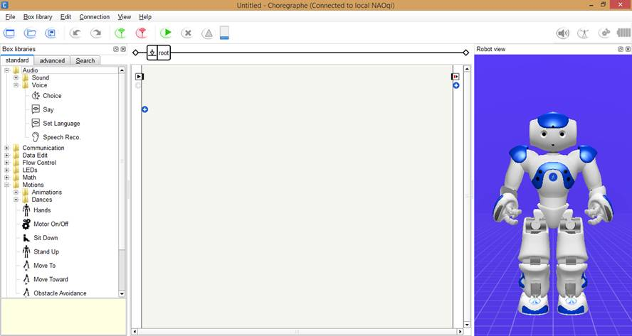
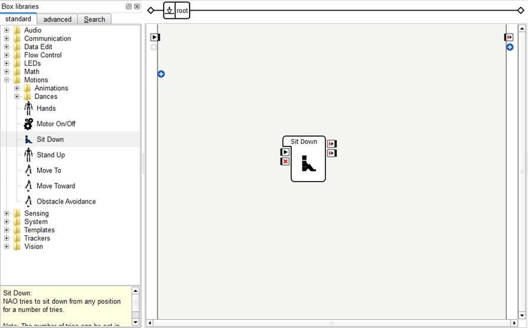
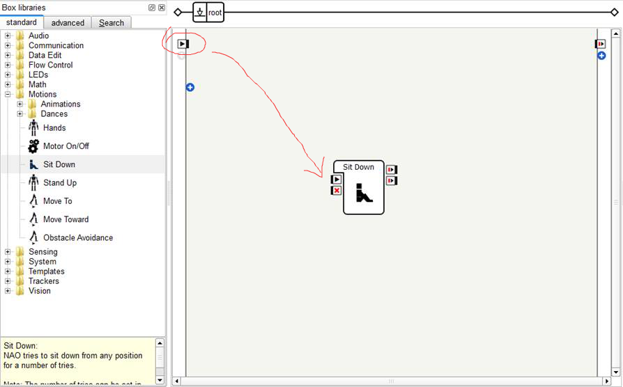
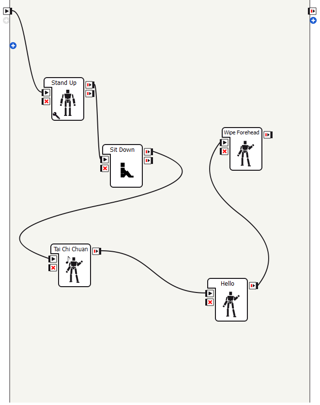
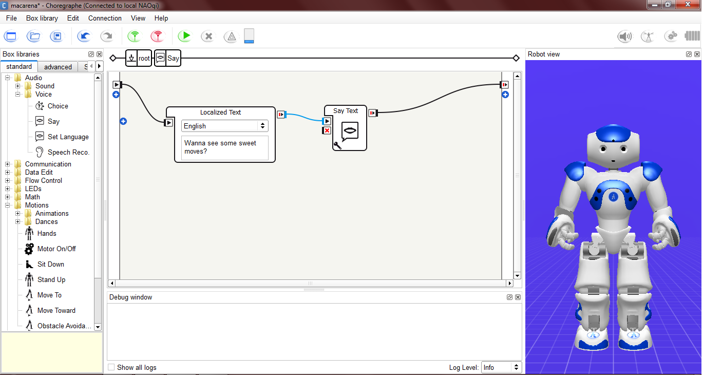
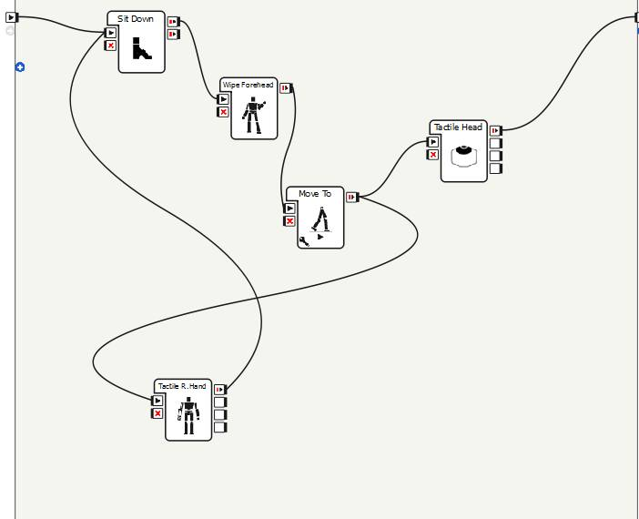
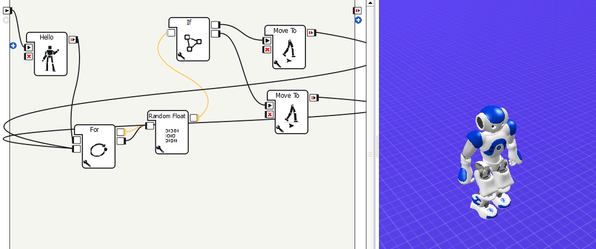

Celem ćwiczenia było zapoznanie się z programowaniem robota Nao za pomocą programu Choreographe firmy Aldebaran. Zapewnia ona przyjemny w użytkowaniu interfejs graficzny, który za pomocą mechanizmów drag and drop pozwala na łatwe programowanie robota Nao. Oprócz intuicyjnego systemu możemy także zagłębić się w szczegóły programistyczne. Choreographe wspiera jako języki Java, JavaScript, C++, Python, MATLAB, Urbi i .Net
Platforma jest dostępna pod platformami:
Poniżej możemy zaobserwować ekran powitalny programu. Po prawej stronie widzimy naszego robota w postaci animacji wideo. Będzie ona reagować na tworzone przez nas sekwencje zdarzeń, dzięki czemu możemu obserwować reakcję robota w czasie rzeczywistym. Okienko to stanowi podgląd symulacji
Po lewej stronie widzimy obszar z komponentami, które możemy przeciągać na obszar roboczy znajdujący się w centrum. Komponenty te stanowią pewne gotowe operacje, które robot wykonuje. Możemy modyfikować ruchy robota, co pokaże później
Spróbujmy nakazać robotowi aby usiadł. W tym celu przeciągamy komponent "Sit down" na obszar roboczy
Teraz musimy połączyć wejście naszej czynności z wejściem programu, które znajduje się w lewym górnym rogu (zaznaczone na zdjęciu). Wystarczy "złapać myszką" i przeciągnąć do punktu docelowego
Następnie w podobny sposób łączymy wyjście z wyjściem program. Prostą animację możemy uruchomić za pomocą przycisku Play
Możemy w łatwysposób stworzyć kombinacje ruchów. Wystarczy tylko odpowiednio połączyć bloki i gotowe!
Efektem będzie po kolei:
Możemy w prosty sposób zmusić robota do wypowiedzenia odpowiedniej kwestii. Wystarczy wybrać język oraz tekst który ma powiedzieć
Robot Nao posiada wbudowany zestaw czujników oraz odpowiednich komponentów odpowiedzialnych za pewne warunkowe działania. W poniższym przykładzie pokażę jak stosować rozgałęzienia warunkowe oraz wbudowane czujniki aby kontrolować naszego robota. Możemy zaobserwować, że robot w przypadku poruszenia się ("Move To") oczekuje klepnięcia w głowę lub w rękę. W zależności od naszej reakcji, inna będzie reakcja robota. W pierwszym przypadku wróci on do stanu początkowego ("Sit Down"). W przeciwnym przypadku symulacja się zakończy.
Oprócz prostych rozgałęziem możemy stosować konstukcję warunkowe If-Else, For i wiele, wiele innych. Poniżej przykład
Jak już wspomniałem we wprowadzeniu, oprócz środowiska graficznego możemy także wykorzystać zdolności programistyczne do napisania kodu. Poniżej przykład w Pythonie
class MyClass(GeneratedClass):
def __init__(self):
try: # disable autoBind
GeneratedClass.__init__(self, False)
except TypeError: # if NAOqi < 1.11
GeneratedClass.__init__( self )
def onLoad(self):
self.nTries = 0
self.postureProxy = ALProxy("ALRobotPosture")
pass
def onUnload(self):
self.postureProxy.stopMove()
def onInput_onStart(self):
if(self.nTries != self.getParameter("Maximum of tries")):
self.nTries = self.getParameter("Maximum of tries")
self.postureProxy.setMaxTryNumber(self.nTries)
result = self.postureProxy.goToPosture(self.getParameter("Name"), self.getParameter("Speed (%)")/100.)
if(result):
self.success()
else:
self.failure()
pass
def onInput_onStop(self):
self.onUnload() #~ it is recommanded to call onUnload of this box in a onStop method, as the code written in onUnload is used to stop the box as well
pass
Środowisko Choreographe zapewnia mnóstwo sposobów na zaprogramowanie robota. Sam proces programowania jest przyjemny, bardzo elastyczny i intuicyjny.
Bibliografia